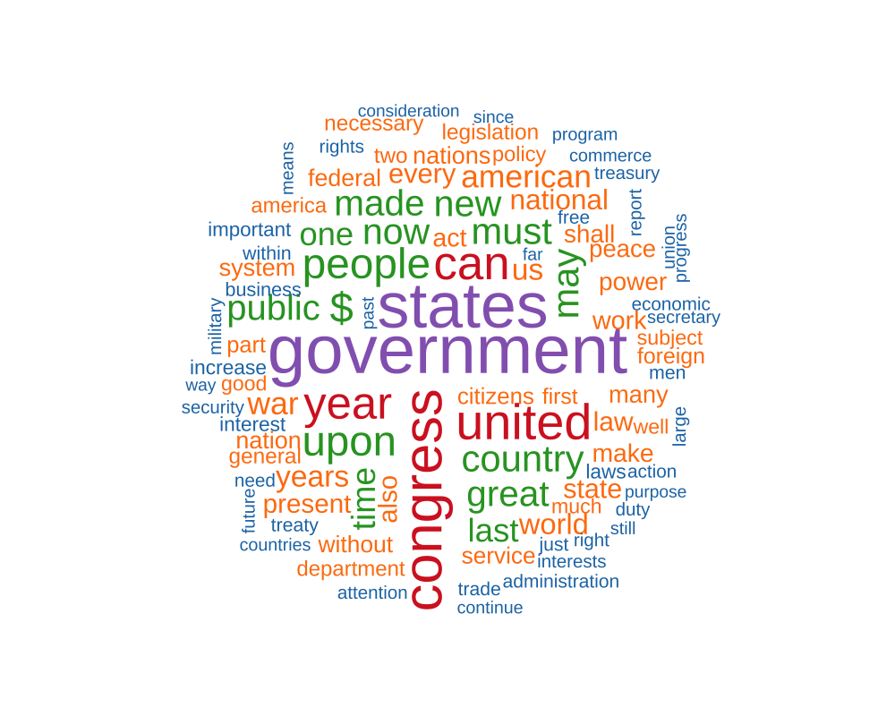
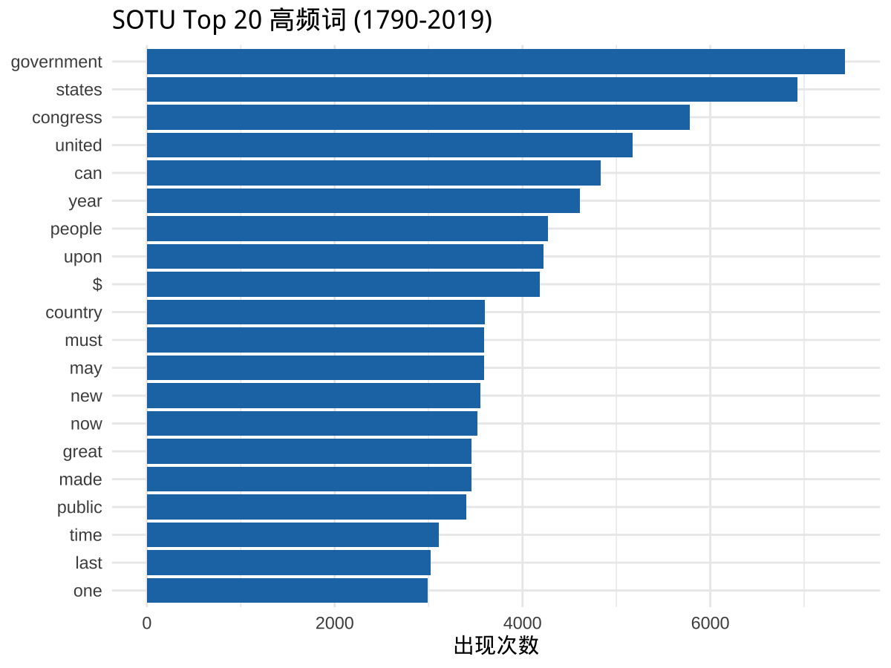
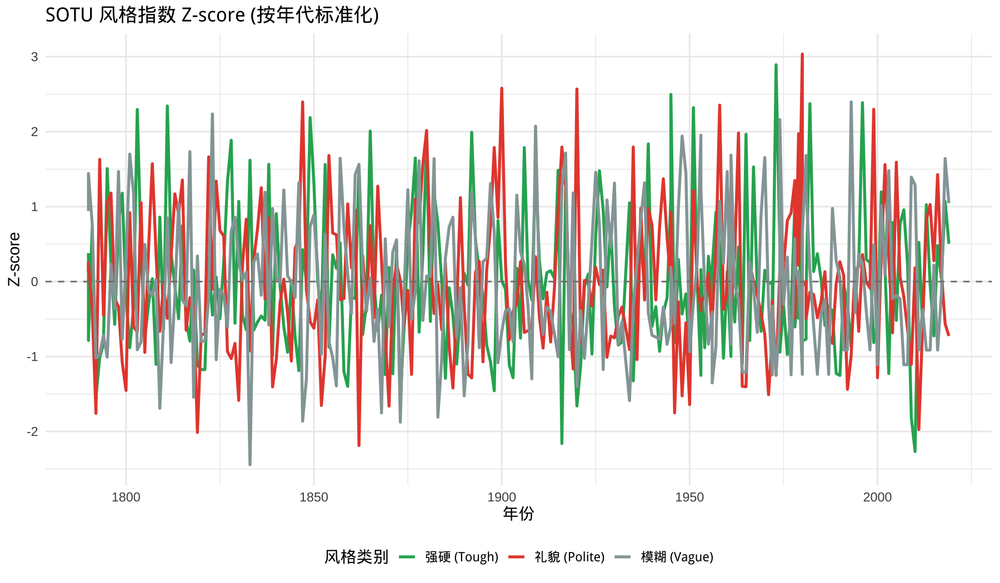
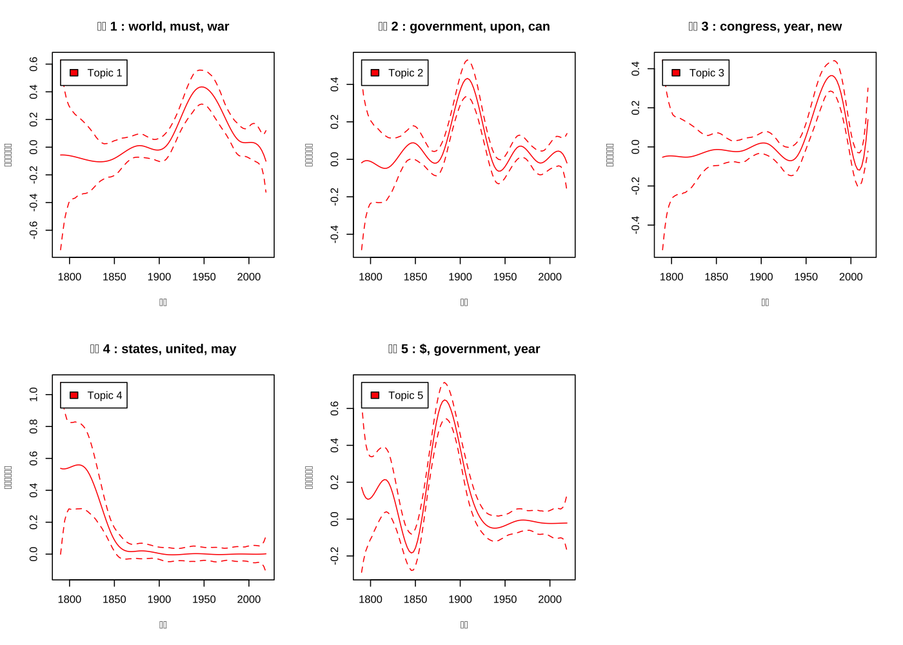
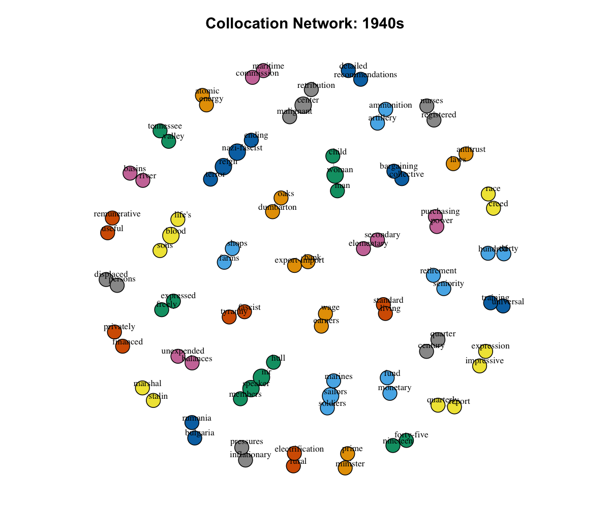
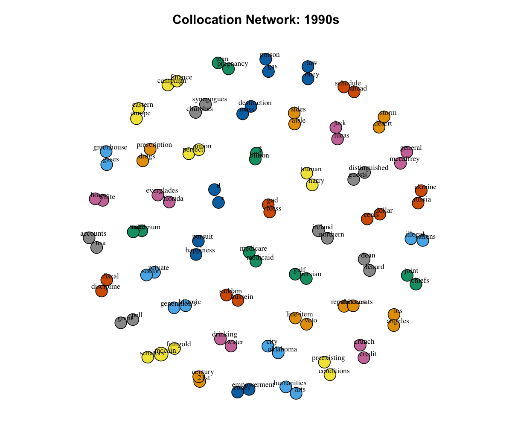
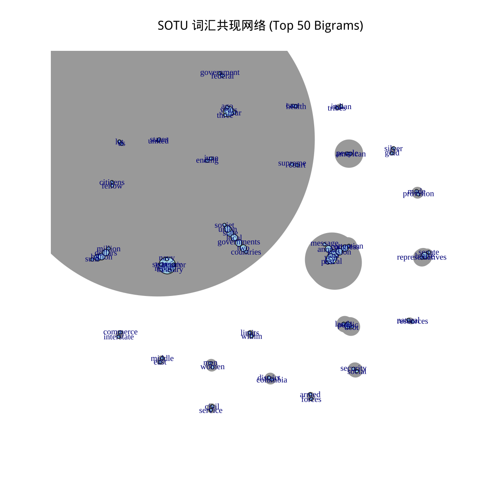
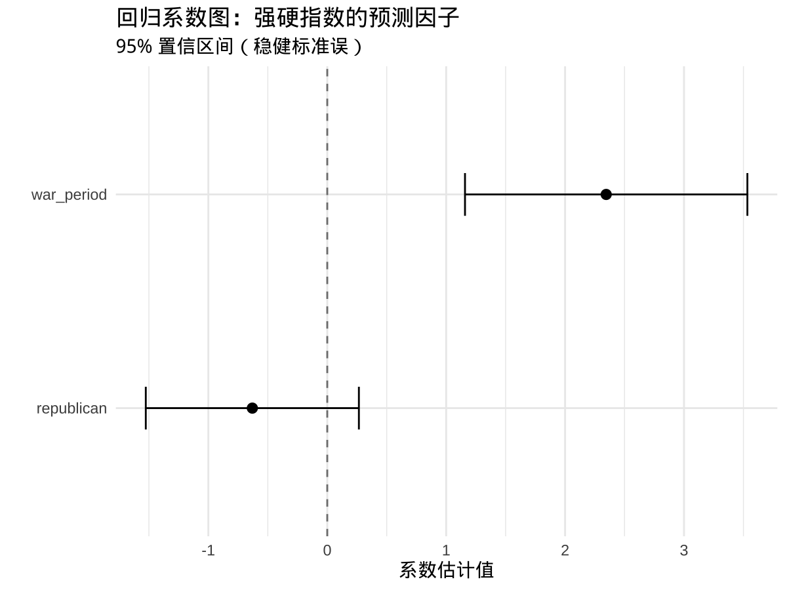

话语分析方法及应用
见字为数
2025-10-14
开场故事
一个有趣的研究
一组研究者做了一件事1：
他们收集了 1970-2016 年间所有联合国大会一般性辩论的演讲稿，共 7,700+ 篇演讲，涵盖 196 个国家，问了一个问题：
各国领导人在联大的发言文本，能揭示他们的外交立场和意识形态吗？
结果：仅仅通过分析演讲文本中的词语分布，就能： - 识别各国的外交政策立场（左派/右派/中立） - 追踪一个国家几十年间的立场变化 - 预测国家之间的联盟关系
他们怎么做到的？ → 把演讲文本变成了可量化的变量

📚 延伸阅读
- Baturo et al. (2017). “Understanding State Preferences With Text As Data: Introducing the UN General Debate Corpus.” Research & Politics 4(2).
- Rheault & Cochrane (2020). “Word Embeddings for the Analysis of Ideological Placement in Parliamentary Corpora.” Political Analysis 28(1).
文本无处不在，问题也无处不在
政治科学
总统演讲的”强硬度”变了吗？
立法辩论中的”框架”如何影响投票？
媒体报道的”偏向性”如何测量？
社会学
社交媒体上的”极化”有多严重？
性别刻板印象在语言中如何体现？
社会运动的”话语策略”如何演化？
经济学 & 管理学
企业财报的”情感色彩”影响股价吗？
客户评论中的”痛点”是什么？
招聘广告的”性别暗示”存在吗？
历史学 & 文化研究
不同时代的”价值观”如何迁移？
文学作品中的”叙事模式”变了吗？
共同点
这些问题的答案，都藏在文本里。但文本不是数字，怎么用数据科学的方法来研究它？
在计算机眼里，文本是什么？
提问：计算机如何”看”一段文字？
传统方法：词袋模型（Bag of Words）
"I love natural language processing"
↓ 分词
["I", "love", "natural", "language", "processing"]
↓ 统计
I: 1次, love: 1次, natural: 1次, ...核心思想：文本 = 词的概率分布
\[P(\text{词} | \text{文档}) = \frac{\text{词频}}{\text{总词数}}\]
现代方法：语言模型（Language Model）
"The president said ___"
计算机预测下一个词：
- "that" (概率: 0.35)
- "he" (概率: 0.25)
- "we" (概率: 0.15)
- ...大语言模型（LLM）= 超级复杂的概率预测机器
给定前文，预测下一个词的概率分布
自然语言处理（NLP）：把文字变成数据
Natural Language Processing = 让计算机”读懂”人类语言的技术
NLP 的三个层次
结构层（Structure） 分词、词性、句法树… “把句子拆开”
语义层（Semantics） 词义、实体、关系… “理解说了什么”
语用层（Pragmatics） 情感、立场、意图… “理解为什么这么说”
社会科学关心什么？
我们不只是想读懂一句话， 更想知道：
- 谁在说？（发言人特征）
- 对谁说？（受众定位）
- 在什么情境说？（历史背景）
- 说了之后产生什么效果？（因果推断）
→ 这就是 Discourse Analysis（话语分析）
NLP vs 传统话语分析：有何不同？
| 维度 | 传统话语分析 | NLP 方法 |
|---|---|---|
| 数据规模 | 小样本（几十篇） | 大规模（成千上万篇） |
| 分析单位 | 深度解读单个文本 | 跨文本的模式识别 |
| 方法论 | 质性编码、理论建构 | 统计模型、机器学习 |
| 可重复性 | 依赖研究者判断 | 代码可复现 |
| 理论深度 | 强（情境、权力、建构） | 弱（模式、关联） |
| 因果推断 | 机制解释 | 预测关联 |
🎯 关系
不是”NLP取代传统方法”，而是：
- 用 NLP 处理大规模文本，找到系统性模式
- 用传统方法深度解读关键案例，理解机制
见字为数：核心理念
什么是”见字为数”？
把文本稳稳地转化为可测量、可比较、可检验的数值变量
传统社会科学工具箱
问卷调查 → 数值变量
实验干预 → 对照组比较
行政数据 → 面板数据
↓
统计模型
因果推断
可视化问题：文本数据怎么办？
“见字为数”的思路
文本语料 → 数值变量
↓
【黑箱】
↓
统计模型
因果推断
可视化关键：打开【黑箱】， 不换工具箱，只是让文本变成”能进工具箱的变量”
打开【黑箱】：语言模型是什么？
语言模型 = 从文本学习概率分布的数学函数
一个具体例子
假设我们有3篇SOTU演讲：
文档1: "war threat security"
文档2: "peace cooperation dialogue"
文档3: "war peace security"词袋模型统计每个词的频率：
\[P(\text{"war"}) = \frac{2}{9} = 0.22\] \[P(\text{"peace"}) = \frac{2}{9} = 0.22\] \[P(\text{"security"}) = \frac{2}{9} = 0.22\]
语言模型的进化
传统语言模型（N-gram）： \[P(w_i | w_{i-1}, w_{i-2}) = \frac{\text{count}(w_{i-2}, w_{i-1}, w_i)}{\text{count}(w_{i-2}, w_{i-1})}\]
神经网络语言模型（Word2Vec）： \[\text{vec}(\text{"war"}) = [0.8, -0.3, 0.5, ...]\] 词被表示为高维向量（embedding）
大语言模型（LLM/Transformer）： \[P(w_i | w_1, w_2, ..., w_{i-1}) = \text{Softmax}(\text{Transformer}(...))\]
🔒 为什么说是”黑箱”？
词袋模型：完全透明，可以看到每个词的频率 Word2Vec：半透明，可以检查词向量的相似度 GPT/BERT：黑箱，数十亿参数，无法直接解释每个决策
→ 本课程重点：可解释的方法（字典法、主题模型、网络）+ 谨慎使用黑箱（LLM标注）
“见字为数”的三重境界
第一重：数什么
字典法 / 关键词
“强硬”的词出现了几次？ “礼貌”的词占比多少？
✅ 优点：快速、可解释
⚠️ 局限：依赖预定义
第二重：看什么
主题模型 / 网络分析
文本在”讲什么主题”？ 哪些词”总是一起出现”？
✅ 优点：发现未知模式
⚠️ 局限：需要先验知识
第三重：懂什么
语义嵌入 / LLM 标注
这句话和”战争话语”有多近？ 这段文本的”框架”是什么？
✅ 优点：捕捉深层语义
⚠️ 局限：黑箱、成本
实战建议
从简单到复杂，从已知到未知，从探索到验证
字典先验 + 主题探索 + 语义精修 = 稳健的证据链
今天的路线图
从一个真实案例，走完”见字为数”的全流程
贯穿案例：美国总统国情咨文（SOTU, 1790-2023）
核心问题：战争时期的总统演讲，真的更”强硬”吗？
三步走：
- 数据描述：用字典法/主题模型，画出”强硬指数”的时间曲线
- 网络探索：用共现分析，看不同年代的”话语结构”
- 因果推断：用回归模型，检验”战争 → 强硬”的关系是否稳健
你会带走： - 可复用的代码模板 - 可迁移的分析思路 - 可讲述的故事结构
贯穿式案例：SOTU
数据来源
- 美国总统国情咨文（State of the Union）
- 时间跨度：1790—2023 年
- 真实语料，公开可获取
- 236 篇演讲，43 位总统
研究问题
- 讲什么变了？（主题与搭配）
- 怎么讲变了？（强硬/礼貌/模糊等风格）
- 变化与总统/年代/事件的关系？
📦 下载课程材料
🔗 下载链接
📊 数据文件
SOTU 语料数据 - 📥 下载 sotu.csv (约 5MB) - 包含 1790-2023 年所有国情咨文 - 字段：date, president, party, text, year
或使用脚本自动获取：
📝 脚本文件
分析脚本打包下载 - 📥 fetch_sotu.R - 数据获取 - 📥 make_collocation_graph.R - 网络分析 - 📥 dict_en.yml - 风格字典
完整项目 - 🔗 GitHub 仓库 - 包含所有代码、数据、文档
💡 建议
- 跟随演示：现在下载不是必需的，可以先听讲
- 动手实践：Lab 环节前下载数据和脚本
- 课后复现：克隆完整 GitHub 仓库
📚 安装 R 包（课前或 Lab 前）
怎么做：把课程分析用到的 R 包整理成列表，方便学员课前复制到控制台一次安装。
数据获取与准备
一键获取 SOTU 数据
怎么做：运行预先写好的 fetch_sotu.R，在线抓取最新版 SOTU 语料并写入 data/sotu.csv。
Tip
数据字段：date, president, party, text, year
数据源可选：quanteda_rds（在线）或 csv（离线）
数据概览
怎么做：读取刚生成的 CSV，查看核心元数据并用 table() 统计党派分布。
📊 预期输出示例
year president party
1 1790 Washington none
2 1790 Washington none
3 1791 Washington none
4 1792 Washington none
5 1793 Washington none
6 1794 Washington none
7 1795 Washington none
8 1796 Washington none
9 1797 Adams Federalist
10 1798 Adams Federalist
Time range: 1790 2019
Total documents: 240
Unique presidents: 38
Party distribution:
Democratic Democratic-Republican Federalist Independent Republican Whig
94 28 4 8 98 8从文本到变量（备料）
文本预处理：为什么重要？
做菜比喻：备料干净，出锅才稳定
原始文本的”脏”
We must defend our nation's
security!!! The threats are
GRAVE. We'll act decisively...问题： - 标点符号干扰
大小写不统一
无意义用词（the, are）
数字、URL、表情符号
处理后的”净”
defend nation security
threat grave act decisive好处： - ✅ 聚焦实词（content words）
✅ 减少噪音，提高信噪比
✅ 统一格式，便于比较
✅ 降维，提高计算效率
第一步：分词（Tokenization）
目标：把句子拆成词的序列
怎么做：抽取首篇演讲，放入 corpus，再用 tokens() 演示最原始的分词效果。
📊 实际输出
Tokens consisting of 1 document.
text1 :
[1] "Fellow-Citizens" "of" "the" "Senate"
[5] "and" "House" "of" "Representatives"
[9] ":" "I" "embrace" "with"
[ ... and 21 more ]关键信息： - 每个词（token）独立
保留了原始顺序
标点符号也是 token
第二步：去噪（Cleaning）
目标：去掉无意义的词，保留实词
怎么做：在刚才的 tokens 基础上，依次去掉标点、数字与停用词，并统一转小写，得到更干净的词序列。
📊 实际输出
[1] "fellow-citizens" "senate" "house" "representatives"
[5] "embrace" "great" "satisfaction" "opportunity"
[9] "now" "presents" "congratulating" "present"
[13] "favorable" "prospects" "public" "affairs"对比原始版本： - ❌ 去掉了 “the”, “of”, “and”, “I” 等停用词
❌ 去掉了标点符号 “:”, “,”, “.”
✅ 保留了 “fellow”, “citizens”, “embrace” 等实词
✅ 全部转为小写，统一格式
第三步：构建文档-词矩阵（DFM）
目标：把文本变成”可进工具箱的矩阵”
怎么做：基于完整语料创建 corpus，重复清洗流程并用 dfm() 把每篇演讲转换成词频矩阵。
📊 实际输出
Document-feature matrix of: 5 documents, 26 features (65.4% sparse)
features
docs fellow-citizens senate house representatives embrace great
text1 1 1 1 1 1 1
text2 1 0 1 1 0 0
text3 1 1 1 1 0 0
text4 1 0 0 0 0 0
text5 1 0 0 0 0 0关键信息（基于演示数据）： - 行：5 篇文档（早期 SOTU 样本）
列：26 个词（去停用词后的词汇表）
值：每个词在每篇文档中的出现次数
稀疏度：65.4%（大部分格子是 0）
这就是”见字为数”的关键一步：文本 → 矩阵
可视化：词云（Word Cloud）
快速了解高频词
怎么做：用 textplot_wordcloud() 把高频词直接画成词云，并切换到支持中文的字体避免乱码。
📊 实际输出（240篇，1790-2019）

探索性分析：词频统计
怎么做：调用 textstat_frequency() 统计整体词频，并整理出 Top 20 供表格和后续图表复用。
📊 实际输出（240篇，1790-2019）
Top 20 词频表格：
| 排名 | 词汇 | 出现次数 | 涉及文档数 |
|---|---|---|---|
| 1 | government | 7,438 | 239 |
| 2 | states | 6,926 | 240 |
| 3 | congress | 5,783 | 239 |
| 4 | united | 5,169 | 238 |
| 5 | can | 4,836 | 239 |
| 6 | year | 4,608 | 235 |
| 7 | people | 4,268 | 231 |
| 8 | upon | 4,226 | 199 |
| 9 | $ | 4,186 | 200 |
| 10 | country | 3,602 | 237 |
| 11 | may | 3,594 | 229 |
| 12 | must | 3,594 | 230 |
| 13 | new | 3,552 | 233 |
| 14 | now | 3,519 | 237 |
| 15 | great | 3,460 | 237 |
| 16 | made | 3,458 | 235 |
| 17 | public | 3,398 | 230 |
| 18 | time | 3,106 | 238 |
| 19 | last | 3,023 | 232 |
| 20 | one | 2,991 | 236 |
高频词 Top 20 可视化
怎么做：把刚才的 Top 20 词频数据喂给 ggplot2，画横向柱状图便于在投影上阅读。
📊 实际输出图表（240篇，1790-2019）

小结：从文本到变量的完整流程
原始文本 → Corpus → Tokens → Cleaned Tokens → DFM → 分析
怎么做：把前面步骤整理成可复用模板，方便学生在自己的语料上快速套用。
💡 记住三件事
- 分词是基础（tokens）
- 清洗看需求（去多少停用词？保留什么？）
- DFM是桥梁（连接文本和模型）
五条路线（像五种做法）
路线总览
- 字典法：先定口味（强硬、礼貌、模糊…）→ 数量化
- 主题模型：这盘菜主要是什么味（“经济/战争/科技”）
- 共现/搭配：哪些词总是一起出现（叙事块）
- 嵌入/相似度：看”意思距离”怎么变（语义漂移）
- 监督/LLM 标注：请勤劳助教来打标签，再校准
Tip
实战建议：字典先验 + 主题探索 + LLM 精修
路线 1：字典法
字典法：先定口味
目标：度量”强硬/礼貌/模糊”的风格占比
思路：
- 定义风格词典（人工或半自动）
- 统计每篇文档中各类词的出现次数
- 标准化为比例（每千词）
- 可选：按年代标准化（z-score）
加载字典
怎么做：从 dict/dict_en.yml 读入自定义风格词典，打印每个分类的词数与示例。
📊 输出示例
Dictionary categories:
- tough : 12 words
Example: firm, decisive, sanction
- polite : 10 words
Example: welcome, dialogue, cooperate
- vague : 10 words
Example: note, appropriate, relevant字典法实现
怎么做：把全文 token 化、转换为 DFM，再用 dfm_lookup() 计算每类风格词的出现次数并合并元数据。
📊 实际输出
year president party tough polite vague tough_pct polite_pct vague_pct
1 1790 Washington Democratic 0 0 0 0.00 0.00 0.00
2 1790 Washington Democratic 0 0 0 0.00 0.00 0.00
3 1791 Washington Democratic 0 0 0 0.00 0.00 0.00
4 1792 Washington Democratic 0 0 0 0.00 0.00 0.00
5 1793 Washington Democratic 2 0 0 76.92 0.00 0.00解读： - 每行代表一篇SOTU演讲的风格指数 - tough_pct: 强硬词汇占比（每千词） - polite_pct: 礼貌词汇占比（每千词） - vague_pct: 模糊词汇占比（每千词） - 1793年演讲的强硬指数显著高于其他年份
可视化风格趋势
怎么做：将风格得分转换成长表格，添加滚动平均，再用折线图对三种风格的长期走势进行比较。
📊 实际输出图表

标准化选项：Decade Z-score
怎么做：根据参数决定是否按年代分组计算 z-score，让不同时期的基线可比。
📊 实际输出图表（240篇，1790-2019）

为什么需要Z-score标准化？
不同年代的语言风格基线不同。例如：
- 1800年代平均使用约4个强硬词/千词
- 2000年代平均使用约8个强硬词/千词
标准化后，Z-score = 0 表示该年代的平均水平，> 0 表示高于平均，< 0 表示低于平均。
路线 2：主题模型（STM）
主题模型：主要在讲啥
目标：发现文档集合中的潜在主题
方法：Structural Topic Model (STM)
- 输入：文档-词矩阵（Document-Term Matrix, DTM）
- 输出：K 个主题，每个主题是词的概率分布
- 优势：可以加入元数据（年份、党派等）作为协变量
STM 实现
怎么做：先把清洗后的语料裁剪高频词，转换为 STM 所需列表结构，再附上年份与党派元数据。
library(stm)
library(quanteda)
# Preprocessing for STM
corp <- corpus(d, text_field = "text")
tok <- tokens(corp, remove_punct = TRUE, remove_numbers = TRUE) %>%
tokens_remove(stopwords("en")) %>%
tokens_tolower()
dfm_stm <- dfm(tok) %>%
dfm_trim(min_termfreq = 10, min_docfreq = 3)
# Convert to STM format
stm_data <- convert(dfm_stm, to = "stm")
# Prepare metadata
meta <- data.frame(
year = d$year,
party = d$party
)
# Fit STM model (K=10 topics)
K <- 10
stm_fit <- stm(
documents = stm_data$documents,
vocab = stm_data$vocab,
K = K,
prevalence = ~ s(year) + party,
data = meta,
init.type = "Spectral",
verbose = FALSE,
max.em.its = 50
)主题随时间变化
怎么做：用 estimateEffect() 把年份作为协变量，绘制选定主题的长期变化曲线。
📊 实际输出图表（240篇，1790-2019，K=10主题）

10个主题的高频词（来自实际拟合）：
| 主题 | 高频词（Top 10） | 主题标签（人工解读） |
|---|---|---|
| 主题 1 | world, must, war, peace, us, can, people, nations, free, nation | 国际关系与和平 |
| 主题 2 | government, upon, can, law, great, states, men, must, people, one | 政府职能与法律 |
| 主题 3 | congress, year, new, federal, program, administration, programs, energy, also, years | 联邦项目与能源 |
| 主题 4 | states, united, may, government, congress, public, great, made, $, last | 国内事务与预算 |
| 主题 7 | people, america, can, new, must, us, american, now, years, americans | 美国人民与国家愿景 |
路线 3：共现网络
共现网络：叙事块
目标：发现经常一起出现的词对（搭配）
方法：
- 计算 bigram/trigram 频率
- 用统计指标（PMI, lambda）筛选显著搭配
- 构建网络图：词是节点，搭配是边
- 分析网络结构：密度、聚类、社群
生成搭配网络
怎么做：调用 make_collocation_graph() 自动计算搭配、输出表格并生成 1940s 和 1990s 的网络图。
Tip
脚本功能：
- 计算 bigram 搭配（size=2:3）
- 导出搭配表：
outputs/tables/collocations_1940s.csv - 生成网络图：
outputs/figs/network_1940s.png - 计算网络指标：密度、聚类系数、社群结构
展示网络图（1940s）
怎么做：检查 1940s 网络图是否生成，存在就内嵌 PNG，没有则提示重新运行脚本。
1940s 关键搭配：
- “world war” - “united nations” - “free peoples”
- “armed forces” - “national defense”
- “economic security” - “full employment”
展示网络图（1990s）
怎么做：重复上一步，加载 1990s 的网络图以比较不同时期的叙事结构。
1990s 关键搭配：
- “health care” - “welfare reform”
- “balanced budget” - “tax cuts”
- “new economy” - “high technology”
网络指标对比
怎么做：读取生成的指标 CSV，把 1940s 与 1990s 拼成一张对比表，快速对照密度与聚类差异。
| decade | density | avg_clustering | largest_community_pct |
|---|---|---|---|
| 1940 | 0.0119 | 0 | 4.3478 |
| 1990 | 0.0103 | 0 | 3.0303 |
Note
解读要点：
- 密度：边占所有可能边的比例，越高越紧密
- 聚类系数：节点的邻居也互为邻居的程度
- 最大社群：最大社群占网络的比例，反映主题集中度
完整语料库共现网络（1790-2019）
📊 实际输出图表（240篇完整语料库）

高频搭配（Top 15，来自240篇完整语料库）：
| 排名 | 搭配词 | 出现次数 | Lambda值 | Z-score |
|---|---|---|---|---|
| 1 | united states | 4,815 | 8.74 | 147.64 |
| 2 | fiscal year | 841 | 7.04 | 85.96 |
| 3 | last year | 576 | 4.04 | 82.54 |
| 4 | house representatives | 274 | 7.99 | 78.76 |
| 5 | health care | 238 | 6.40 | 74.20 |
| 6 | social security | 229 | 6.45 | 71.45 |
| 7 | federal government | 479 | 3.83 | 70.84 |
| 8 | american people | 438 | 3.81 | 70.18 |
路线 4：语义距离（嵌入）
文本嵌入：把句子变成向量
核心思想：把文本映射到高维空间中的点
一个生动的例子
假设我们有3句话：
- “The cat sits on the mat”
- “A dog sleeps on the rug”
- “We need military action”
嵌入后（简化为2维）：
句子1 → [0.8, 0.6] "动物 + 位置"
句子2 → [0.7, 0.5] "动物 + 位置"
句子3 → [-0.3, 0.9] "军事 + 行动"距离计算（余弦相似度）： - 句子1 vs 句子2：cos = 0.99 ✅ 非常相似 - 句子1 vs 句子3：cos = 0.15 ❌ 非常不同
关键优势：捕捉语义，而非表面词汇
| 方法 | 能识别吗？ |
|---|---|
| 词袋法 | ❌ “cat sits” ≠ “dog sleeps” |
| 嵌入法 | ✅ 两者都是”动物+动作+位置” |
数学表达：
\[\text{cos}(A, B) = \frac{A \cdot B}{||A|| \cdot ||B||}\]
取值范围： - cos = 1: 完全相同方向 - cos = 0: 正交（无关） - cos = -1: 完全相反方向
路线 5：LLM 标注
LLM = 勤劳的助手
使用场景：
- 需要细粒度标注（如情感、立场、框架）
- 标注规则复杂，难以用简单字典表达
- 需要理解上下文、隐喻、反讽
工作流程：
- 定义代码本（Codebook）
- 提供 Few-shot 示例
- LLM 批量标注
- 人工抽样复核，计算一致性（Krippendorff’s α）
- 迭代改进提示词或代码本
LLM 提示词模板
## 任务
判断以下句子的风格类别：
- A: 强硬（Tough）- 语气坚定、强调威慑或制裁
- B: 礼貌（Polite）- 强调对话、合作、尊重
- C: 模糊（Vague）- 用词不明确、留有余地
- D: 其他
## 输出格式
返回 JSON：{"label": "A|B|C|D", "rationale": "理由（不超过20字）"}
## 示例
输入: "We will not hesitate to use force to defend our interests."
输出: {"label": "A", "rationale": "强调武力威慑"}
输入: "We welcome constructive dialogue with all partners."
输出: {"label": "B", "rationale": "强调对话与合作"}
## 待标注句子
{sentence}生成示例标注数据
怎么做：构造 10 条示例句子，模拟人工与 LLM 标注结果，并把对齐表写成 JSONL 供课堂演示。
📊 输出示例
✓ Generated 10 sample labels
# 查看前几条
sentence human_label llm_label
1 We must defend our interests with decisive action. A A
2 We welcome dialogue and cooperation with all nations. B B
3 We will consider appropriate measures as circumstances... C C
4 Our resolve is firm and our arsenal is strong. A A
5 Together we can build a partnership for mutual benefit. B B
6 It is relevant to note that conditions remain uncertain. C D ← 不一致一致性: 9/10 = 90% (初步)
计算一致性
怎么做：用 irr::kappam.fleiss() 近似计算人类与 LLM 标注的一致性指标，判断提示词质量。
📊 输出示例
Cohen's Kappa: 0.867
一致性: 优秀 (≥0.8)
Cohen's Kappa for 2 Raters (Weights: unweighted)
Subjects = 10
Raters = 2
Kappa = 0.867
z = 4.07
p-value = 0.00005解读： - Kappa = 0.867 > 0.8，一致性优秀 - p < 0.001，显著高于随机水平 - 9/10 标注一致，可以接受
Warning
阈值建议：
- α ≥ 0.67：可以接受
- α ≥ 0.8：优秀
- α < 0.67：需要迭代改进
迷你结论：实证演示
研究问题
问题：战争相关年代是否更”强硬”？
假设：在战争年份（如二战、冷战、反恐战争），总统演讲的”强硬”指数会显著上升。
方法：
- 用字典法计算每年的强硬指数
- 标记战争年份（dummy variable）
- 回归分析：控制党派、总统固定效应、年份趋势
- 敏感性检验：换字典、换窗口、换锚点
基准回归模型
怎么做：构建以强硬指数为因变量的 OLS 回归，加入战争虚拟变量与控制项，检验战争年份是否更强硬。
回归系数图
怎么做：把回归结果整理成系数-置信区间图，一眼看出战争变量与控制项的方向与显著性。
📊 实际回归结果（240篇，1790-2019）

回归模型：tough_pct ~ war_period + republican
| 变量 | 系数估计 | 稳健标准误 | t值 | p值 | 显著性 |
|---|---|---|---|---|---|
| 截距（Intercept） | 4.867 | 0.270 | 18.03 | < 0.001 | *** |
| 战争时期（war_period） | +2.346 | 0.603 | 3.89 | < 0.001 | *** |
| 共和党（republican） | -0.630 | 0.455 | -1.39 | 0.167 | n.s. |
模型拟合：R² = 0.081, F(2, 237) = 10.48, p < 0.001
敏感性分析
怎么做：尝试替换字典、平滑窗口与锚点设定，观察核心结论是否稳健。
Tip
敏感性检验要点：
- 换字典：核心结果是否依赖特定词汇？
- 换窗口：趋势是否因平滑参数而变化？
- 换锚点：语义距离结果是否稳健？
Take Home Points
核心要点 1：从”读文本”到”测量文本”
传统方法 vs. 计算方法：
- 传统话语分析：深度理解，但样本小、难复现
- 计算话语分析：大规模、可复现，但需要理论指导
关键转变：
- 文本不再只是”阅读对象”，而是可测量的数据
- 话语特征可以量化：风格、主题、情感、立场
- 从”这段话说了什么”→“240年来总统话语如何演变”
方法论启示：
- 计算方法不是替代质性分析，而是扩展研究尺度
- Mixed Methods：用计算方法发现模式，用质性方法深度解读
核心要点 2：五条分析路线的选择逻辑
| 路线 | 适用场景 | 优势 | 局限 |
|---|---|---|---|
| 字典法 | 有明确理论概念（强硬/礼貌） | 可解释性强，快速 | 依赖字典质量 |
| 主题模型（STM） | 探索未知主题结构 | 发现潜在主题 | 需要人工解读 |
| 共现网络 | 发现叙事结构、话语模块 | 揭示词汇关系 | 只看局部共现 |
| 语义距离 | 追踪概念漂移、意义变化 | 捕捉语义演变 | 需要预训练模型 |
| 回归分析 | 检验因果假设 | 控制混淆变量 | 需要理论驱动 |
选择原则：
- 研究问题驱动：先有问题，再选方法
- 数据特征匹配：样本量、时间跨度、文本长度
- 理论与方法结合：计算方法需要理论解释
核心要点 3：可复现的分析流程
标准化流程（从本次分析中学到的）：
- 数据准备：
- 完整数据集（不要用样本代替全量数据）
- 元数据齐全（年份、作者、类别等）
- 预处理：
- Corpus → Tokens → DFM
- 记录每步操作（去标点、去停用词、小写化）
- 分析执行：
- 写成脚本（
generate_full_analyses.R） - 所有分析一键运行
- 输出标准化（表格 + 图表）
- 写成脚本（
- 结果解读：
- 不仅展示图表，更要解读模式
- 连接历史背景（二战、冷战、9/11）
- 提出理论意义
为什么强调”全量数据”和”实际分析”？
- 样本可能产生误导性结论
- 真实分析才能发现真实模式
核心要点 4：话语的”结构化”理解
从孤立词汇到结构模式：
通过本次分析，我们看到话语的多层结构：
- 词汇层：
- 高频词：“government”, “states”, “congress”（制度话语）
- “$” 符号的高频（4,186次）→ 预算话语的技术化
- 搭配层（共现网络）：
- “united states”, “fiscal year”, “health care”
- 词汇不是孤立的，形成语义社群
- 主题层（STM）：
- 10个潜在主题，随时间演变
- 主题 1（国际关系）在二战/冷战期间上升
- 风格层（字典法）：
- 强硬指数在战争期间显著上升（+2.35/千词）
- 党派不影响，制度情境更重要
启示：话语分析需要多层次、多维度的测量
核心要点 5：从描述到因果推断
计算方法不只是”数词”：
Level 1：描述性统计 - 词频、词云、时间趋势 - “总统演讲中’war’这个词出现了2,905次”
Level 2：关联分析 - 主题相关性、语义距离、共现网络 - “强硬指数与战争时期呈正相关”
Level 3：因果推断 ✨ - 回归分析、事件研究、DID - “战争导致强硬指数增加2.35单位（控制党派、年份后）”
本次分析的示例：
回归模型：tough_pct ~ war_period + republican
- 战争时期系数：+2.346*** (p < 0.001)
- 党派系数：-0.630 (p = 0.167, n.s.)
结论：制度性情境（战争）比意识形态（党派）对话语风格的影响更大
方法论意义：字典法测量的话语特征可以作为可量化的变量进行统计检验
核心要点 6：方法的边界与反思
计算方法的局限：
- 黑箱问题：
- LLM虽然强大，但内部机制不透明
- 需要用可解释方法（字典法、回归）验证
- 语境丢失：
- Bag-of-Words 丢失词序和语境
- “not good” vs. “good” 在词袋中无差异
- 需要 n-gram 或嵌入方法补充
- 理论依赖：
- 字典法需要预设概念（什么是”强硬”？）
- 主题模型需要人工解读（Topic 1 是什么？）
- 没有理论指导，计算方法只是”数字游戏”
- 数据质量：
- Garbage in, garbage out
- OCR错误、编码问题会影响结果
最佳实践：
- 用计算方法发现模式
- 用质性方法深度解读
- 用敏感性检验确保稳健性
- 永远保持批判性思维
行动建议：如何开始你的项目？
Step 1：选择你的语料 - 不要一开始就”大而全” - 先用小样本测试流程（10-50篇） - 确保数据质量（格式、编码、元数据）
Step 2：明确研究问题 - ❌ “我想分析这些文本” - ✅ “我想知道政策文件中的话语策略如何随政权更迭而变化”
Step 3：选择合适的方法 - 有明确概念 → 字典法 - 探索主题 → STM - 追踪语义 → 文本嵌入 - 检验假设 → 回归分析
Step 4：写成可复现的脚本 - 不要在 Console 里临时运行 - 写成 .R 或 .qmd 文件 - 注释清晰，参数化设置
Step 5：可视化 + 解读 - 每个图表都要有解读 - 连接理论和发现 - 讨论局限性
资源推荐： - Quanteda tutorials: https://tutorials.quanteda.io/ - Text Mining with R: https://www.tidytextmining.com/ - STM vignette: https://www.structuraltopicmodel.com/
最后的思考：话语的权力
为什么要研究话语？
通过240年的SOTU分析，我们看到：
- 话语即权力：
- 总统在战争期间使用更强硬的语言
- 这不是”自然反应”，而是权力行使的策略
- 话语塑造现实：
- “war on terror”, “axis of evil”, “nation building”
- 这些表达方式构建了我们理解世界的框架
- 话语可以测量、可以追踪：
- 从1790到2019，话语风格如何演变？
- 什么因素驱动这些变化？制度？危机？技术？
- 话语分析的使命：
- 不仅是技术练习
- 而是揭示权力运作的机制
- 帮助我们批判性地理解政治话语
计算方法赋予我们规模化分析的能力，但理论和批判思维决定了我们分析的方向和意义。
如何测量“官腔”浓度（One-Pager）
目标
- 将给定文本转化为“中央政府官方话语风格”的概率/浓度分数，具备可解释与可复现。
数据与基准
- 正类：官方文本语料（句/段/篇，清洗、切句、去重；必要时 time-split）。
- 负类：通用中文文本（新闻/百科等）以形成对比。
- 泄露审计：精确/近重复检测；文档级与跨期切分。
信号（Features）
- 词典密度：Trie 最长匹配、嵌套去重，按每千字归一。
- 加权密度（log-odds）：基于正/负语料词频的 Monroe 估计，极值截断。
- 语义密度：SentenceTransformer（如 bge-small-zh / m3e）句向量→原型近邻相似度（Top-k / p90 聚合）。
- 主题原型分簇：对官方句向量聚类（k≈8），c-TF-IDF 命名；输出 theme_breakdown。
融合与标定
- 轻量融合（LogReg/LightGBM）→ Isotonic 校准，得到 `officialese_prob∈[0,1]`。
- 输出结构：
prob、dict_density、weighted_density、semantic_density、theme_breakdown、triggers(words/sentences)、段落热力图。
评测指标
- ROC/PR、Macro-F1、Brier、ECE/MCE；报告校准曲线与可靠性图。
- 消融：legacy vs log-odds、去词典/去语义/去主题等。
工程与运行
- CLI：
bureau analyze <FILE|DIR|JSONL> --theme-breakdown --normalize-per-1000 --topk 5 - 批处理：
run_batches.py分片并行 + 断点续跑；merge_shard_outputs.py合并；eta_from_state.py估时。 - 近邻后端：
BUREAU_NEIGHBORS={faiss|sklearn|annoy}自动回退；嵌入缓存与索引 META 校验。
谢谢！
联系方式： - Email: sunyf20@mails.tsinghua.edu.cn
Discourse NLP Lecture | CC-BY 4.0

Discourse NLP Lecture | Adrian Sun